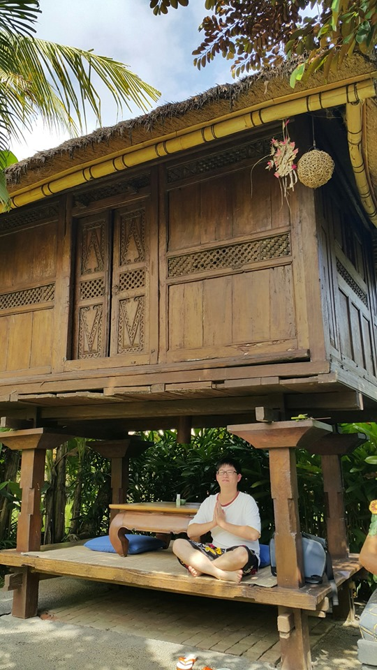

+
介紹自己
我叫林璋謙，住在台中市大甲區，大學就讀南台科技大學-資訊工程學系，高中就讀致用高級中學-電子資訊，參加過職訓中心（ＲＷＤ跨載具）介面設計與前端框架實務班）的職前訓練結訓，結合所學的技能做出了一個專題實作。
+
工作經歷
在前一份工作是在傳統製造產業當技術員，負責的工作是天車（固定式起重機）的操作、產品的化學表面處理、廢水處理，讓我在工作上學習到細心與謹慎，在工作上一個不小心都會出現公安問題，導致身體的傷害，若在於工作上出現了一個問題，學會與相關人員討論如何解決問題，加強自我學習專業技能與工作實務上的應用。。
+

未來發展
在之前的工作有思考自己的職涯發展，在前份工作時，就有自己在網路上自學網頁的前後端技術，離職後基於想要把網頁這方面的興趣結合至工作上，所以來參加職前訓練全心學習，藉由職前訓練讓我把自學不懂的地方做結合，在網頁專題上挖掘技術，來達到甜美的果實，也讓我確定了自己對於網頁開發的發展方向。。
+
自我期許
期許自己能夠做到製作一個專案，先在不足的地方精進自己的能力與技術，在工作上貢獻自己的能力，然後工作中成長，在實務上求表現。